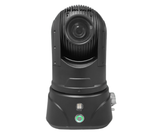
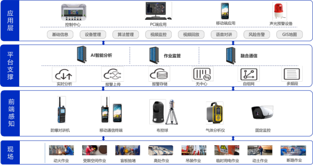

可搬型ドームカメラで、作業現場のリスクを見逃さない公開時間：2026-07-24 15:00 可搬型ドームカメラで、作業現場のリスクを見逃さない Yingchuang Tiandi モバイル運用インテリジェント監視製品ラインの特別トピック
石油化学企業では、火災、吊り上げ、密閉空間での作業が数時間続くことがあります。 作業員は安全ヘルメットを着用していましたか?高所作業時の安全ロープは正しく結ばれていますか?保護者は常駐していますか？ぶら下がっている物体の下に誰か滞在していますか?現場に煙や炎はありましたか? これらの一見小さな変化は、多くの場合、リスクが発生する前の重要なシグナルです。 従来の監督は主に現場での監視と手動検査に依存しています。しかし、人間の注意力には限界があり、固定カメラにも死角があります。点在するモバイル運用、長時間、複雑な環境に直面して、唯一頼れるのは人々が画面を見つめているため、中断することなくプロセス全体を通じてリスクを検出することは困難です。 作業現場にも一足あれば「火の目と金の目」、状況はどう変わるのでしょうか？ から「撮る」から「わかる」へ  ▲本質安全モバイル展開および制御機器 - 監視視線を作業現場まで延長 Yingchuang Tiandi の移動運用インテリジェント監視製品ラインは、防爆布とボール制御を運用現場に展開します。 操作点とともに移動でき、固定された監視点に制限されません。設置が完了してネットワークに接続すると、現場のビデオ、音声、機器のステータス、位置情報をリアルタイムで監視プラットフォームに送信できます。 しかし、その価値は映像だけにとどまりません。 頼るAIビデオインテリジェント分析機能により、ボールコントロールによって収集された画像をシステムによって継続的に分析できます。このシステムは、人の行動、稼働状況、環境の変化に注意を払い、起こり得る異常事態をタイムリーに特定する、たゆまぬ「安全監視員」のようなものです。 このペア「火の目と金の目」は現場を見るだけでなく、危険性も理解できます。 どのようなリスクに焦点を当てていますか? 1. 個人の保護に重点を置く リスクの高い現場では、個人用保護具が労働者を守るための最前線となります。 このシステムは、実際のシナリオに基づいて、高所作業時の安全ヘルメットの未着用や安全ロープの適切な使用などの行動を識別できます。異常が発見された場合、プラットフォームはタイムリーにアラーム情報を生成し、現場の画像を保持して管理者に迅速な確認と対処を促します。 2. 後見責任に注意を払う 特殊業務は現場監督と切り離せないものです。 監視エリアを区切ることにより、システムは監視員が監視しているかどうかを継続的に判断できます。ポストを離れる。保護者が持ち場を離れたり、監視エリアに長時間現れない場合、システムは監督の不在によって引き起こされる安全上のリスクを軽減するためにリマインダーを発行できます。 3. 危険な行動に注意する 作業中に電話やタバコを吸うと注意が散漫になったり、現場の安全状態が損なわれる可能性があります。 モバイル運用インテリジェント監視システムは、通話、喫煙、人の集まりなどの異常な行動を特定し、これまで偶然の発見に依存していた問題を、記録、思い出させ、対処できるリスクイベントに変換します。 4. 危険性の高い作業エリアに注意を払う 吊り上げ作業中、吊り上げ物の作業領域とブームの下は重要な危険領域です。このシステムは、危険なエリアに入ったり、吊り下げられた物の下に立ったり歩いたりする人々をインテリジェントに識別し、現場管理者がタイムリーに介入できるようにします。 5. 環境の異常に注意する 炎や煙は本質的に突然発生する傾向があります。 このシステムは、ビデオアルゴリズムを組み合わせて、動作エリア内の異常な炎、煙、その他の特徴を特定し、それを現場の音と光によるリマインダー、プラットフォームのポップアップ、モバイルメッセージとリンクさせて、リスク検証と緊急対応のための時間を稼ぐことができます。 リスクを発見した後は、「報告してください」 本当に効果的なスマート監視は次のようなものにとどまるべきではありません。「問題を発見する」。 いつAI が異常を認識した後、監視プラットフォームは次のことができます。によると関連するジョブ チケット、ジョブの場所、展開および制御機器を使用して、オンサイトのリアルタイム イメージを取得できます。アラーム情報は、プラットフォームのポップアップ、モバイル メッセージ、テキスト メッセージ、または音声メッセージを通じて関係者にプッシュできます。 安全管理者は遠隔から現場を確認し、音声インターコムを通じて即時是正を要求できます。必要に応じてシャットダウン指示を発行できます。是正完了後は責任者が処理結果を確認し消火完了となります。 これにより、各アラームは孤立した情報ではなくなり、追跡、処理、確認できる管理の閉ループになります。 ペア「火の目と金の目」、その裏には完璧なシステムがある  ▲移動体運用インテリジェント監視システムの全体構成 モバイル作業現場は、固定ネットワークのカバレッジが不十分な場所に設置されることが多く、一部の作業は地下のパイプギャラリー、施設内、または制限されたスペースで行われることもあります。 オンサイト画像の安定した返却を保証するために、Yingchuang Tiandi のモバイル運用インテリジェント監視製品ラインは企業をサポートします工場の状況や運用シーンに合わせて、LTEプライベートネットワーク、メッシュアドホックネットワーク、オペレーター4G/5Gなどのさまざまな通信方式を柔軟に組み合わせることができます。 同時に、フロントエンドはガス検出データにもアクセスできます。監督者は操作画面を見るだけでなく、現場のガス濃度の変化を把握したり、音声インターホンで現場と連絡を取り合うことができます。 したがって、ボールコントロールは独立したカメラデバイスではありません。無線ネットワークに接続されており、AI アルゴリズム、ジョブ チケット、ガス検知、警報処理、安全管理プラットフォーム。 リスクを認識し、責任を本当に果たせるようにする モバイル運用の安全監視の目標は、テクノロジーを使用して監視要員を置き換えることではなく、テクノロジーを使用して人々の視野を広げ、人々の判断を補い、リスク対応効率を向上させることです。 防爆布がボールをコントロールするとき、AI による「鋭い目」により、現場のリスクをよりプロアクティブに発見できます。 · 固定監視が見ることができない場合、モバイルデバイスがそのギャップを埋めることができます。 · 人が見落としがちな瞬間、AI は注意を払い続けることができます。 · このプラットフォームは、オンサイトで見つかった異常に迅速にアクセスできます。 · このシステムは、プロセス全体を通じて完了した廃棄の痕跡を残すことができます。 から「見える」から「理解できる」そして「管理できる」まで、インチュアン ワールドはモバイル ビデオ、無線通信、人工知能テクノロジーを使用して、あらゆる高リスクの業務に対するデジタル セキュリティの防御線を構築しています。
Yingchuang Tiandi モバイル操作インテリジェント監視製品ライン モバイル作業現場を可視化し、リスクを特定し、廃棄を制御し、プロセスを追跡できるようにします。 |